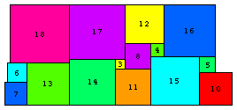
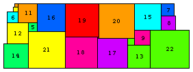
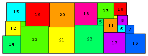
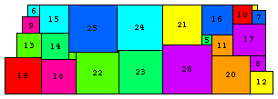
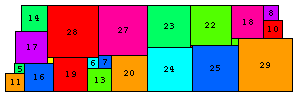

Let f(n) be the longest flat surface obtainable from the squares 1, 2, 3, . . . n. Can you find good bounds for f(n)? What can you prove about f(n)? Does f(n)/n → ∞ as n→ ∞?
Joseph DeVincentis found most of the best bounds on f(n) for n≤30. He also showed that f(99) ≥ 892. He made the following conjecture, which would imply that f(n)/n → ∞ as n→ ∞. This is based on a flat surface at height roughly 2n.
Conjecture: The optimal solutions for large n have two layers and f(n) ≈ (1+4+9+ . . . +n2) / 2n ≈ n2/6.
Trevor Green showed f(9999) ≥ 165448. He also proved that f(n)/n → ∞ by showing
Theorem: Let G(n)= log(√3(2n–6)/(1+√3))
log(√3(2n–6)/(1+√3)) / log(2+√3). Then f(n) ≥ n (G(n)–2)/2.
/ log(2+√3). Then f(n) ≥ n (G(n)–2)/2.
Here are the best known lower bounds for f(n):
| n | f(n) | Picture | Author |
|---|---|---|---|
| 1 | 1 |  | Trivial |
| 2 | 2 |  | Trivial |
| 3 | 4 |  | Trivial |
| 4 | 5 |  | Erich Friedman |
| 5 | 8 |  | Erich Friedman |
| 6 | 9 |  | Erich Friedman |
| 7 | 12 |  | Erich Friedman |
| 8 | 13 |  | Erich Friedman |
| 9 | 18 |  | Erich Friedman |
| 10 | 20 |  | Joe DeVincentis |
| 11 | 24 |  | Joe DeVincentis |
| 12 | 29 |  | Joe DeVincentis |
| 13 | 32 |  | Joe DeVincentis |
| 14 | 39 |  | Joe DeVincentis |
| 15 | 47 |  | Joe DeVincentis |
| 16 | 51 |  | Joe DeVincentis |
| 17 | 57 |  | Joe DeVincentis |
| 18 | 63 |  | Maurizio Morandi |
| 19 | 64 |  | Joe DeVincentis |
| 20 | 81 |  | Erich Friedman |
| 21 | 81 | | Erich Friedman |
| 22 | 88 |  | Maurizio Morandi |
| 23 | 95 |  | Maurizio Morandi |
| 24 | 99 | Maurizio Morandi | |
| 25 | 113 | Maurizio Morandi | |
| 26 | 118 |  | Joe DeVincentis |
| 27 | 130 |  | Joe DeVincentis |
| 28 | 130 | | Joe DeVincentis |
| 29 | 140 |  | Maurizio Morandi |
| 30 | 147 |  | Joe DeVincentis |
There were no responses, except to note that for n=1, 1 square is symmetric, and that there is a solution if the squares don't have to placed with lattice points as corners.
There were no responses, though there was progress on this problem in 2004, 2009, and 2010. Here are the best known packings:
 s(1)=1 |  s(2)=3 |  s(3)=5 |  s(4)=7 |  s(5)=9 |  s(6)=11 |  s(7)=13 |  s(8)=15 |  s(9)=18 |  s(10)=21 |
 s(11)=24 |  s(12)=27 |  s(13)=30 |  s(14)=33 |  s(15)=36 |  s(16)=39 |
 s(17)=43 |  s(18)=47 |  s(19)=50 |  s(20)=54 |  s(21)=58 |
 s(22)=62 |  s(23)=66 |  s(24)=71 |  s(25)=75 |
 s(26)=80 |  s(27)=84 |  s(28)≤89 |  s(29)=93 |
 s(30)=98 |  s(31)=103 |  s(32)=108 |
 s(33)=113 |  s(34)=118 |  s(35)=123 |
 s(36)=128 |  s(37)=133 |  s(38)≤139 |
 s(39)=144 |  s(40)≤150 |  s(41)=155 |
If you can extend any of these results, please e-mail me. Click here to go back to Math Magic. Last updated 10/10/10.